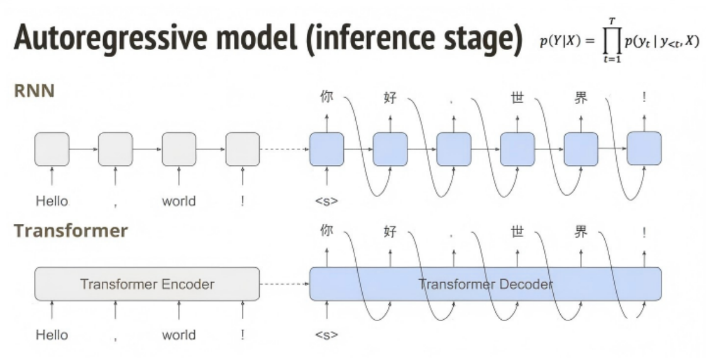
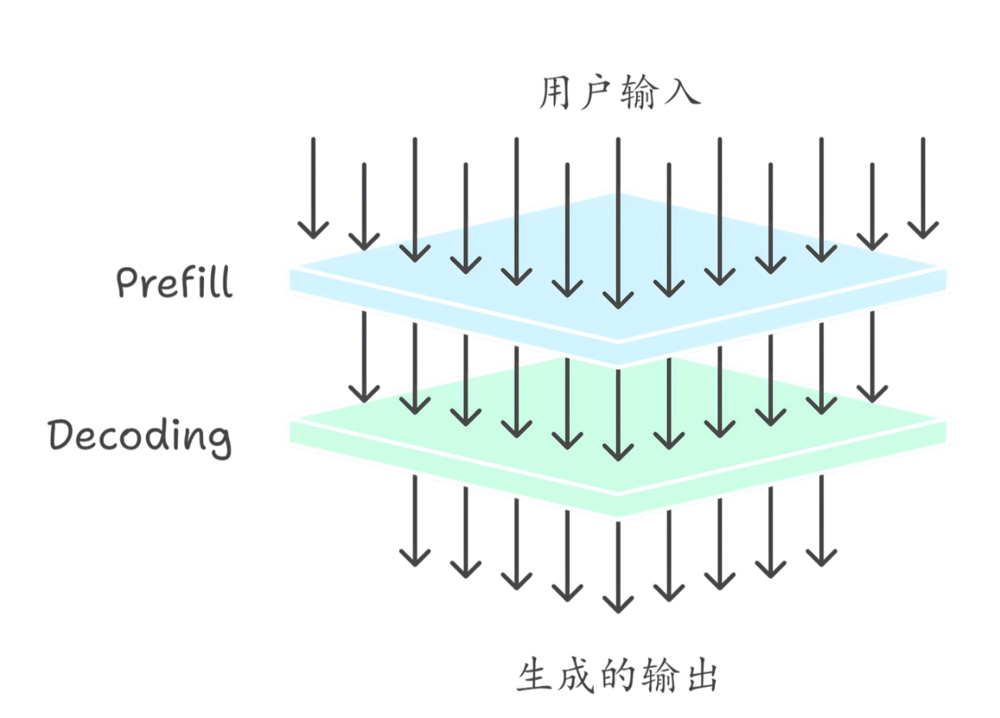
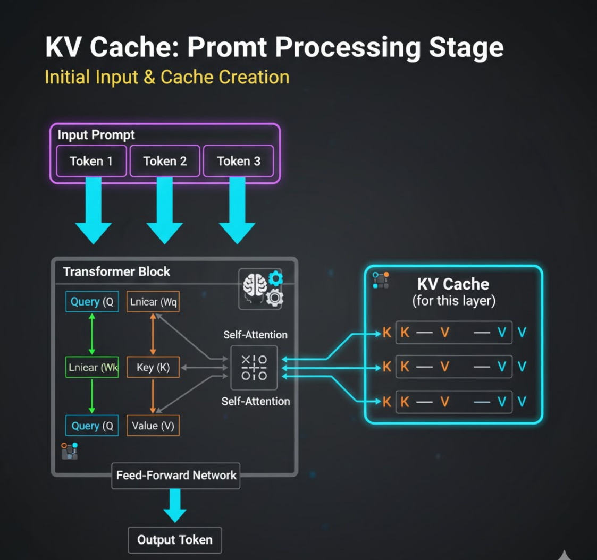

推理机制
在大语言模型的运行过程中，推理（Inference）指的是模型在训练完成之后，根据输入文本生成输出 内容的过程。与模型训练阶段不同，推理阶段不再更新模型参数，而是利用已经学习到的语言知识对 输入信息进行理解和预测，从而生成相应的回答、文章或代码。
大语言模型的推理过程本质上是一种 自回归生成（Autoregressive Generation）。

模型会根据当前上下文信息预测下一个最可能出现的 Token，然后将这个 Token 加入上下文，再继续 预测下一个 Token。这个过程不断重复，直到生成完整的输出文本或达到设定的最大长度。换句话 说，模型并不是一次性生成整段文本，而是逐步生成，每一步都依赖之前生成的内容。 在实际计算流程中，推理通常可以分为两个阶段：Prefill（上下文计算阶段）和 Decoding（生成阶 段）。

Prefill 阶段主要用于处理用户输入的上下文信息。当用户输入一段文本时，模型会对所有输入 Token 进行一次完整的前向计算，得到每个 Token 的隐藏状态表示。这一步通常计算量较大，因为需要同时 处理整段输入序列。
在 Prefill 完成之后，模型进入 Decoding 阶段，也就是逐 Token 生成输出的过程。在每一步生成中， 模型会根据当前上下文预测下一个 Token 的概率分布，然后根据一定的采样策略选择最终输出的 Token。这个 Token 会被加入上下文中，并作为下一步预测的输入。由于每一步都依赖前一步生成的 结果，因此生成过程是顺序进行的，而不能完全并行。 为了提高推理效率，大语言模型通常会使用一种重要的优化技术，称为 KV Cache（Key-Value 缓 存）。

在 Transformer 的注意力计算中，每个 Token 都会生成对应的 Key、Query 和 Value 向量。如果在生 成过程中每一步都重新计算整个序列的注意力，那么计算成本会非常高。KV Cache 的思路是将已经计 算过的 Key 和 Value 向量缓存起来，在后续生成步骤中直接复用，从而避免重复计算。这种方法可以 显著减少推理时间，是现代大模型推理系统中的关键优化手段。
除了 KV Cache 之外，推理性能还可以通过多种方式进行优化。例如，一些系统会采用 Batch 推理 来 同时处理多个请求，从而提高 GPU 利用率；也有一些系统通过 量化（Quantization） 技术减少模型 参数的存储和计算精度，从而降低显存占用并提高推理速度。此外，模型并行和流水线并行等技术也 常被用于大规模推理系统中，以支持高并发的用户请求。
推理机制不仅影响系统的运行效率，也会影响模型生成内容的质量。在生成过程中，模型通常不会直 接选择概率最高的 Token，而是通过不同的采样策略来控制输出的多样性和稳定性。例如，通过调整 温度（Temperature）参数可以控制输出的随机程度，而 Top-k 或 Top-p 采样则可以限制模型在候选 Token 中进行选择，从而避免生成不合理的内容。这些策略共同决定了模型生成文本的风格和质量。
在实际应用中，大语言模型的推理通常以 API 服务或在线推理系统的形式提供。当用户发送请求时， 系统会将输入文本转换为 Token，送入模型进行推理，然后逐步生成输出内容并返回给用户。一些系 统还会采用 流式输出（Streaming） 的方式，在生成过程中实时返回 Token，从而减少用户等待时间 并提升交互体验。
总体来看，推理机制是大语言模型从“训练好的模型”转变为“可实际使用的智能系统”的关键环 节。通过自回归生成、缓存优化以及多种推理加速技术，大语言模型能够在复杂任务中高效地生成自 然语言内容。理解推理机制不仅有助于开发者优化系统性能，也有助于设计更稳定、更高效的大模型 应用。